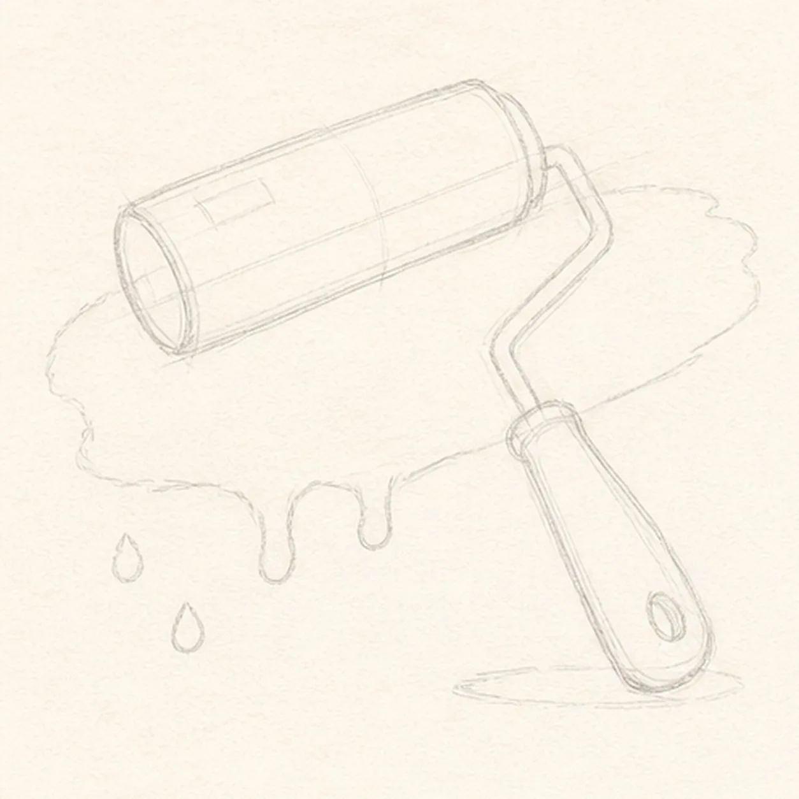
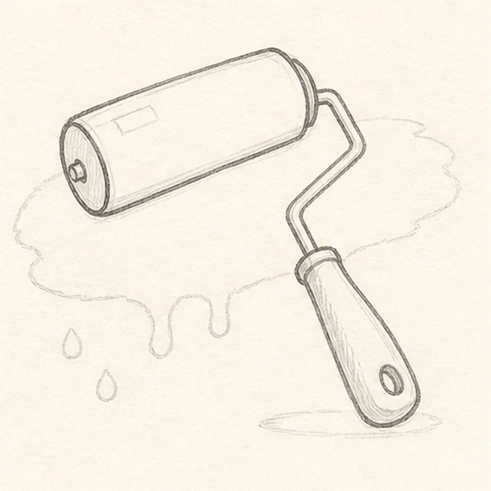
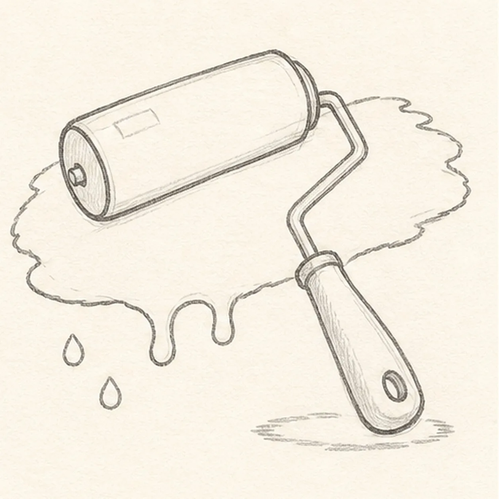
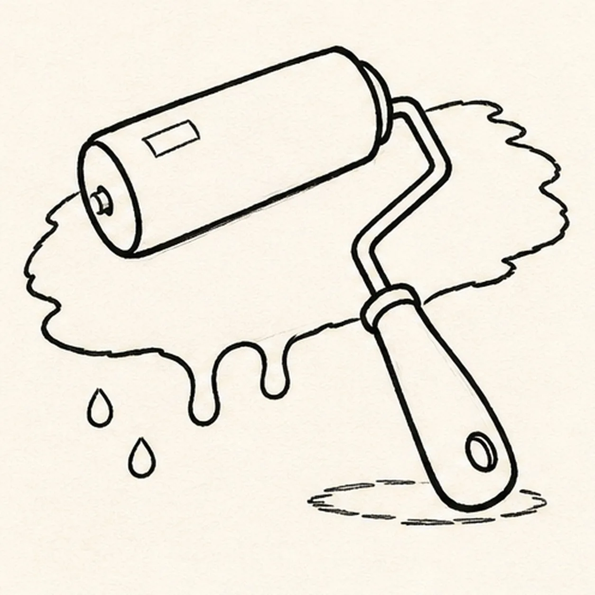
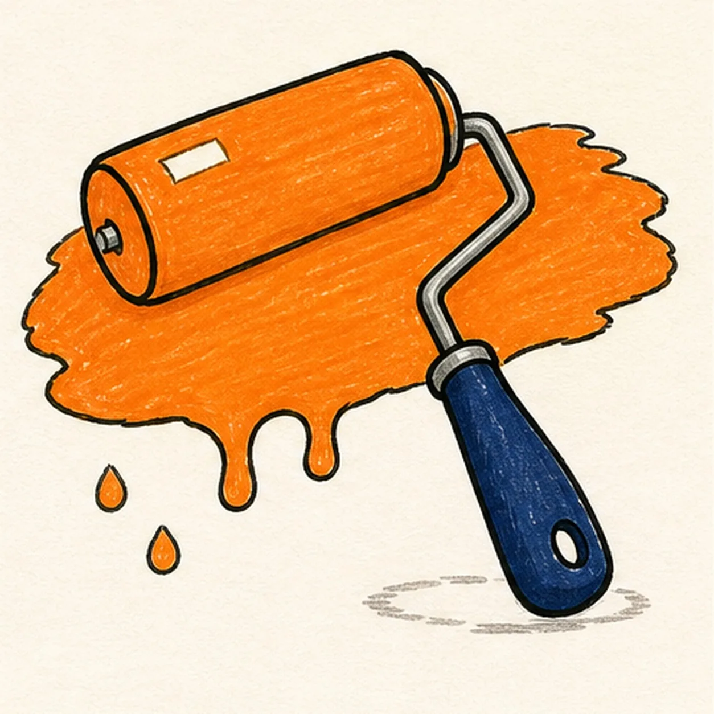

Felt-tip marker mode
Let's draw a paint roller with a paint swash
Treat this as one playful practice round: sketch the idea loosely, simplify the shapes, then commit with confident marker outlines and bright fills.
-
01

Angle the roller guides
Place a pale diagonal roller axis with two cylinder ends, a bent-frame route, and a tapered grip footprint, then reserve the broad swash, exactly two drips, two detached droplets, two cover highlights, grip hole, and shallow shadow.
Marker tip: Ghost the cylinder axis first and keep both end curves wrapped around it. Mark the paint edge and all four falling-paint shapes while the lines are light so the roller remains the focal point.
-
02

Build the roller silhouette
Wrap the guides with one rounded roller cover, one bent metal frame with a clear axle overlap, one small ferrule, and one tapered grip with a hanging hole.
Marker tip: Draw the far end curve before the long cover edges, then stop the metal frame cleanly at the axle and ferrule. That broken overlap keeps the parts connected without looking transparent.
-
03

Shape the paint swash
Clarify one broad paint swash behind the roller, exactly two rounded lower-edge drips, two detached droplets, one rectangular and one curved cover highlight, and one broken oval shadow.
Marker tip: Vary the swash edge with broad bumps instead of tiny fur-like wiggles. Count two attached drips and two detached drops before reaching for black marker.
-
04

Ink the roller and paint
Thicken every established roller, frame, grip, swash, drip, droplet, highlight, and shadow boundary with imperfect black felt-tip lines.
Marker tip: Pull the cylinder edges and frame segments toward yourself, rotating the page at each bend. Leave both cover highlights open and let the wet-looking paint edge wobble more than the hard tool edges.
-
05

Roll on the color
Fill the established roller cover, swash, two drips, and two droplets tangerine, the grip deep navy, the frame cool gray, and the shadow warm gray while preserving both paper highlights and visible marker streaks.
Marker tip: Use long horizontal strokes across the roller cover and swash, then let the tangerine dry before strengthening the black outline. Turn the page for the narrow gray frame so its fill stays inside the bends.
-
06
![Handmade face-free marker drawing of one paint roller angled from an upper-left tangerine cylindrical cover to a lower-right deep-navy tapered grip, with one bent cool-gray metal frame, one broad tangerine paint swash behind the roller, exactly two rounded lower-edge drips, exactly two detached orange droplets, one grip hole, one rectangular and one curved warm-paper highlight on the roller cover, thick imperfect black outlines, visible dry-marker streaks, and one shallow broken warm-gray oval shadow beneath the grip](../assets/paint-roller-with-paint-swash-finished-v1.webp)
Finish the fresh coat
Strengthen selected keeper outlines and clarify the established tangerine paint, roller hardware, navy grip, two drips, two droplets, two paper highlights, and broken shadow without adding another object or paint mark.
Marker tip: Count one roller, one swash, two attached drips, two detached drops, and two cover highlights, then stop while the marker grain shows. A hand, wall, paint can, face, logo, border, or extra tool would make a different lesson.
![Handmade felt-tip marker drawing of one face-free upright cartoon hourglass with exactly two rounded teal caps, exactly two attached coral side pillars, one pale-aqua pinched glass vessel, one curved upper golden-yellow sand bed, one centered falling sand stream, one rounded lower sand pile, exactly two open-paper glass highlights, exactly three yellow four-point sparkles, exactly four deep-navy cap notches, thick imperfect black outlines, visible directional marker texture, and one broken deep-navy ground shadow](../assets/cartoon-hourglass-with-flowing-sand-finished-v1.webp)
![Handmade felt-tip marker drawing of one face-free upright teal cartoon walkie-talkie leaning slightly right with one top-left antenna, exactly two coral top knobs, one attached coral push-to-talk button on the upper-left side, one blank pale-aqua rounded screen with a dark bezel, exactly five horizontal deep-navy speaker slots, exactly two yellow radio-wave arcs above the antenna, exactly two open-paper case highlights, exactly four lower grip ribs arranged two per side, thick imperfect black outlines, visible directional marker texture, and one broken deep-navy ground shadow](../assets/cartoon-walkie-talkie-finished-v1.webp)